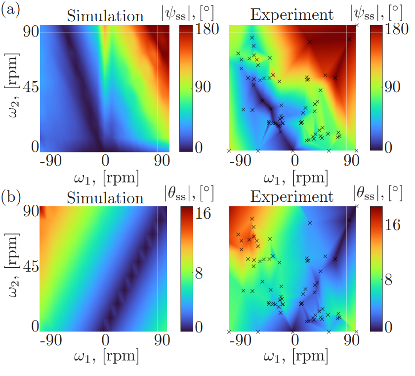

As part of my work with the Structures-Computer Interaction Lab at UCLA, I designed and assembled the robot diagrammed in this schematic. It is a bio-inspired, bi-flagellated robot that is designed to collect rotational data via the on-board IMU. Flagella are the coily tails of bacteria, which help them traverse fluid at their microscopic level, where viscous forces dominate inertial forces. For this experiment, we scaled this system up and used liquid glycerin to simulate the viscous enviornment of bacterial locomotion.
The on-board IMU provided linear acceleration along 3 axes and angular velocity along 3 axes. I combined this data with a complementary filter, integrating angular velocity to track angular position and adjusting with the measured direction of gravity to cancel out drift from integrated noise. The tracked angular position, or attitude, can then be used to validate simulation of flagella locomotion theorized by previous lab work.
Design in SolidWorks
In this CAD explosion, you can see the assembly of my design in SolidWorks. One of the driving considerations of this design were using parameters to set specific dimensions like the distance between motor shafts. To achieve this, I ensured the parametric design tree in SolidWorks was organized and well-defined for adjustments to this parameter. The cylindrical body was also important to ensure the center of mass was not easily offset from the central axis by imperfections. This shape also provides space for fully on-board electronics in future iterations.
I designed the body to be 3D-printed with minimal post-processing needed. The flagella could also 3D-printed for rigidity, though the research also explores the use of soft flagella that enables unique locomotive properties.
In the initial experiment, control was limited to either manual control using joysticks or open-loop control defined in a micro-controller. In the video below, you can see my setup in use with joysticks connected to microcontrollers, drivers, and power outside of the glycerin tank. The wires coming out of the tank connect the IMU and motors to the rest of the electronics. You can also see the soft variation of flagella adjusting shape as they move.

Data from Simulation vs. Experiment
This work was part of a paper studying attitude adjustment for bi-flagellated robots, which I presented at
the 2024 IEEE RoboSoft Conference in San Diego. The full paper can be found
here.
The graphs shown here are results from the paper demonstrating our findings in the similarity between the simulated and experimental steady state angular position of the system with both actuators operating at the given set of angular velocities.
The notable similarities between the data suggest reliable and re-producible attitude adjustment is achievable with bi-flagellated locomotion when controlling speed on each actuator. This sets up future work in controlling this behavior when nevigating viscous environments.
Untethered Variation
Untethered Design in SolidWorks
As part of the planned future work for the overarching project, I began implementing on-board electronics for an untethered version of the robot. In this CAD view, you can can see how three boards are tightly fitted into the inside of the cylindrical body: a micro-controller (Arduino Nano), motor driver, and IMU. A LiPo battery is fitted on the outside of the body to power the system. This version also included motor encoders at the top end of the motor bodies, enclosed within the body. This addition allowed me to implement PID control of the actuator's speed. On the bottom, between the flagella, there is a screw cap that allows for adjustments to the volume to account for buoyancy and adds space for counterweights, similar to the guiding principles of my buoyancy engine project. I designed the body and caps to be 3D-printed and soldered connections between the electronics such that it can all fit inside the body.
In the video below, you can see the the built robot operating in the same glycerin tank, this time without the need for wires coming out of the tank or a ball bearing to fix it in place. The motors are hard-coded to run at a set speed, with one side alternating between a counter-clockwise and clockwise direction. When both actuators are operating in the same direction, the system rotates about the central axis. When the actuators operate in opposite directions, the system remains in place.
I ended up moving to different projects after this, so this was one of the final builds I made for the lab's flagellum locomotion research. Further exploration of this topic would have explored more precise tuning of the balance between weight and buoyancy. I would also consider the need for wireless data collection or commands through glycerin, and more sophisticated closed-loop control to obtain certain attitudes.
Untethered Robot Operation
Thank you to my direct supervisor, Zhuonan Hao, and our PI, Dr. Khalid Jawed, for their direction and guidance in this work.